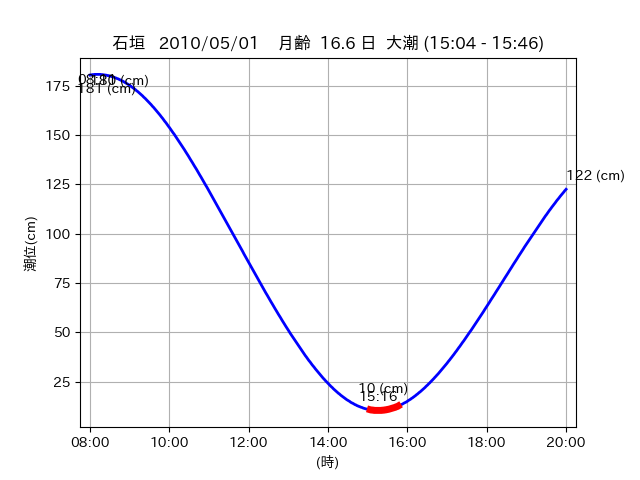

<!DOCTYPE html>
<html>
<head>
    
    <meta http-equiv="content-type" content="text/html; charset=UTF-8" />
    
        <script>
            L_NO_TOUCH = false;
            L_DISABLE_3D = false;
        </script>
    
    <style>html, body {width: 100%;height: 100%;margin: 0;padding: 0;}</style>
    <style>#map {position:absolute;top:0;bottom:0;right:0;left:0;}</style>
    <script src="https://cdn.jsdelivr.net/npm/leaflet@1.9.3/dist/leaflet.js"></script>
    <script src="https://code.jquery.com/jquery-3.7.1.min.js"></script>
    <script src="https://cdn.jsdelivr.net/npm/bootstrap@5.2.2/dist/js/bootstrap.bundle.min.js"></script>
    <script src="https://cdnjs.cloudflare.com/ajax/libs/Leaflet.awesome-markers/2.0.2/leaflet.awesome-markers.js"></script>
    <link rel="stylesheet" href="https://cdn.jsdelivr.net/npm/leaflet@1.9.3/dist/leaflet.css"/>
    <link rel="stylesheet" href="https://cdn.jsdelivr.net/npm/bootstrap@5.2.2/dist/css/bootstrap.min.css"/>
    <link rel="stylesheet" href="https://netdna.bootstrapcdn.com/bootstrap/3.0.0/css/bootstrap-glyphicons.css"/>
    <link rel="stylesheet" href="https://cdn.jsdelivr.net/npm/@fortawesome/fontawesome-free@6.2.0/css/all.min.css"/>
    <link rel="stylesheet" href="https://cdnjs.cloudflare.com/ajax/libs/Leaflet.awesome-markers/2.0.2/leaflet.awesome-markers.css"/>
    <link rel="stylesheet" href="https://cdn.jsdelivr.net/gh/python-visualization/folium/folium/templates/leaflet.awesome.rotate.min.css"/>
    
            <meta name="viewport" content="width=device-width,
                initial-scale=1.0, maximum-scale=1.0, user-scalable=no" />
            <style>
                #map_1cef881e7fd3a8a883d7bd28a6bea9da {
                    position: relative;
                    width: 2048.0px;
                    height: 1600.0px;
                    left: 0.0%;
                    top: 0.0%;
                }
                .leaflet-container { font-size: 1rem; }
            </style>
        
</head>
<body>
    
    
            <div class="folium-map" id="map_1cef881e7fd3a8a883d7bd28a6bea9da" ></div>
        
</body>
<script>
    
    
            var map_1cef881e7fd3a8a883d7bd28a6bea9da = L.map(
                "map_1cef881e7fd3a8a883d7bd28a6bea9da",
                {
                    center: [24.072, 123.796],
                    crs: L.CRS.EPSG3857,
                    ...{
  "zoom": 12,
  "zoomControl": true,
  "preferCanvas": false,
}

                }
            );

            

        
    
            var tile_layer_1f2a22df1e09ddf1fe009c8dad9ec043 = L.tileLayer(
                "https://cyberjapandata.gsi.go.jp/xyz/seamlessphoto/{z}/{x}/{y}.jpg",
                {
  "minZoom": 0,
  "maxZoom": 18,
  "maxNativeZoom": 18,
  "noWrap": false,
  "attribution": "\u5730\u7406\u9662\u5730\u56f3",
  "subdomains": "abc",
  "detectRetina": false,
  "tms": false,
  "opacity": 1,
}

            );
        
    
            tile_layer_1f2a22df1e09ddf1fe009c8dad9ec043.addTo(map_1cef881e7fd3a8a883d7bd28a6bea9da);
        
    
            var marker_61f20f33eb678984a196a977ec92095c = L.marker(
                [24.0502, 123.7416],
                {
}
            ).addTo(map_1cef881e7fd3a8a883d7bd28a6bea9da);
        
    
            var icon_f8b25560842b18d13c80ae66ed8e5464 = L.AwesomeMarkers.icon(
                {
  "markerColor": "orange",
  "iconColor": "white",
  "icon": "info-sign",
  "prefix": "glyphicon",
  "extraClasses": "fa-rotate-0",
}
            );
        
    
        var popup_73d0fb326334301245a693b0a416d773 = L.popup({
  "maxWidth": "100%",
});

        
            
                var html_f435b7bb93cef2264e34bb555a5f6ded = $(`<div id="html_f435b7bb93cef2264e34bb555a5f6ded" style="width: 100.0%; height: 100.0%;"><table><tr><td></td></tr><tr><td><center>20100501 No.1 </center></table></td></tr></table</div>`)[0];
                popup_73d0fb326334301245a693b0a416d773.setContent(html_f435b7bb93cef2264e34bb555a5f6ded);
            
        

        marker_61f20f33eb678984a196a977ec92095c.bindPopup(popup_73d0fb326334301245a693b0a416d773)
        ;

        
    
    
                marker_61f20f33eb678984a196a977ec92095c.setIcon(icon_f8b25560842b18d13c80ae66ed8e5464);
            
    
            var poly_line_874600f10179263ab86dc27316284bb3 = L.polyline(
                [[24.0502, 123.7416], [24.0564, 123.7392]],
                {"bubblingMouseEvents": true, "color": "#FF00FF", "dashArray": null, "dashOffset": null, "fill": false, "fillColor": "#FF00FF", "fillOpacity": 0.2, "fillRule": "evenodd", "lineCap": "round", "lineJoin": "round", "noClip": false, "opacity": 1.0, "smoothFactor": 1.0, "stroke": true, "weight": 3}
            ).addTo(map_1cef881e7fd3a8a883d7bd28a6bea9da);
        
    
            var marker_5a44ac4973c9c2295b4c19311402ed6f = L.marker(
                [24.0417, 123.7573],
                {
}
            ).addTo(map_1cef881e7fd3a8a883d7bd28a6bea9da);
        
    
            var icon_e706dec742e25671249e327c12576511 = L.AwesomeMarkers.icon(
                {
  "markerColor": "orange",
  "iconColor": "white",
  "icon": "info-sign",
  "prefix": "glyphicon",
  "extraClasses": "fa-rotate-0",
}
            );
        
    
        var popup_00f5f78e056ffee5ea23bdae061cc995 = L.popup({
  "maxWidth": "100%",
});

        
            
                var html_c5667b60dcf18ff1c9c1b342ee7d868e = $(`<div id="html_c5667b60dcf18ff1c9c1b342ee7d868e" style="width: 100.0%; height: 100.0%;"><table><tr><td></td></tr><tr><td><center>20100501 No.2 </center></table></td></tr></table</div>`)[0];
                popup_00f5f78e056ffee5ea23bdae061cc995.setContent(html_c5667b60dcf18ff1c9c1b342ee7d868e);
            
        

        marker_5a44ac4973c9c2295b4c19311402ed6f.bindPopup(popup_00f5f78e056ffee5ea23bdae061cc995)
        ;

        
    
    
                marker_5a44ac4973c9c2295b4c19311402ed6f.setIcon(icon_e706dec742e25671249e327c12576511);
            
    
            var poly_line_03458aac1e77afa0125c63de07d6b253 = L.polyline(
                [[24.0417, 123.7573], [24.0408, 123.7643]],
                {"bubblingMouseEvents": true, "color": "#00FFFF", "dashArray": null, "dashOffset": null, "fill": false, "fillColor": "#00FFFF", "fillOpacity": 0.2, "fillRule": "evenodd", "lineCap": "round", "lineJoin": "round", "noClip": false, "opacity": 1.0, "smoothFactor": 1.0, "stroke": true, "weight": 3}
            ).addTo(map_1cef881e7fd3a8a883d7bd28a6bea9da);
        
    
            var marker_bc38c15383dd4a106cc1ecf12bc7a010 = L.marker(
                [24.0722, 123.7939],
                {
}
            ).addTo(map_1cef881e7fd3a8a883d7bd28a6bea9da);
        
    
            var icon_e1391d5031215d892aa5ceb21b55c30a = L.AwesomeMarkers.icon(
                {
  "markerColor": "orange",
  "iconColor": "white",
  "icon": "info-sign",
  "prefix": "glyphicon",
  "extraClasses": "fa-rotate-0",
}
            );
        
    
        var popup_dddb3d1379deed387de0ae1b93d829aa = L.popup({
  "maxWidth": "100%",
});

        
            
                var html_26cd3ba4b57950304343eb38157f4ca2 = $(`<div id="html_26cd3ba4b57950304343eb38157f4ca2" style="width: 100.0%; height: 100.0%;"><table><tr><td></td></tr><tr><td><center>20100501 No.3 </center></table></td></tr></table</div>`)[0];
                popup_dddb3d1379deed387de0ae1b93d829aa.setContent(html_26cd3ba4b57950304343eb38157f4ca2);
            
        

        marker_bc38c15383dd4a106cc1ecf12bc7a010.bindPopup(popup_dddb3d1379deed387de0ae1b93d829aa)
        ;

        
    
    
                marker_bc38c15383dd4a106cc1ecf12bc7a010.setIcon(icon_e1391d5031215d892aa5ceb21b55c30a);
            
    
            var poly_line_29b4a663b5b1455eb5b042d62034e712 = L.polyline(
                [[24.0722, 123.7939], [24.072, 123.7977]],
                {"bubblingMouseEvents": true, "color": "#00FFFF", "dashArray": null, "dashOffset": null, "fill": false, "fillColor": "#00FFFF", "fillOpacity": 0.2, "fillRule": "evenodd", "lineCap": "round", "lineJoin": "round", "noClip": false, "opacity": 1.0, "smoothFactor": 1.0, "stroke": true, "weight": 3}
            ).addTo(map_1cef881e7fd3a8a883d7bd28a6bea9da);
        
</script>
</html>